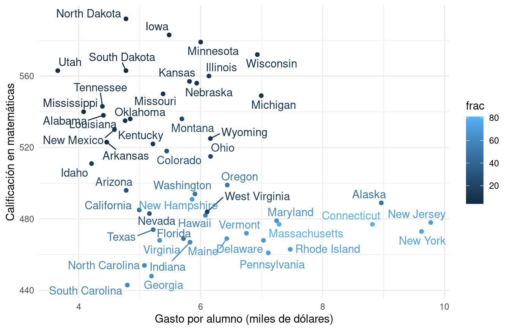
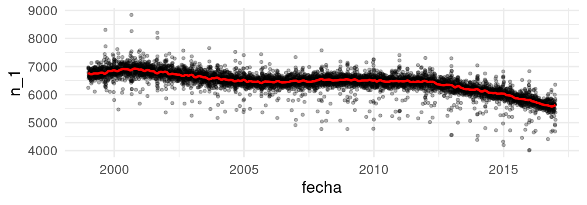

Sección 1 Análisis exploratorio
“Exploratory data analysis can never be the whole story, but nothing else can serve as the foundation stone –as the first step.”
— John Tukey
El papel de la exploración en el análisis de datos
El estándar científico para contestar preguntas o tomar decisiones es uno que se basa en el análisis de datos. Es decir, en primer lugar se deben reunir todos los datos que puedan contener o sugerir alguna guía para entender mejor la pregunta o la decisión a la que nos enfrentamos. Esta recopilación de datos —que pueden ser cualitativos, cuantitativos, o una mezcla de los dos— debe entonces ser analizada para extraer información relevante para nuestro problema.
En análisis de datos existen dos distintos tipos de trabajo:
El trabajo exploratorio o de detective: ¿cuáles son los aspectos importantes de estos datos? ¿qué indicaciones generales muestran los datos? ¿qué tareas de análisis debemos empezar haciendo? ¿cuáles son los caminos generales para formular con precisión y contestar algunas preguntas que nos interesen?
El trabajo inferencial, confirmatorio, o de juez: ¿cómo evaluar el peso de la evidencia de los descubrimientos del paso anterior? ¿qué tan bien soportadas están las respuestas y conclusiones por nuestro conjunto de datos?
Preguntas y datos
Cuando observamos un conjunto de datos, independientemente de su tamaño, el paso inicial más importante es entender bajo qué proceso se generan los datos.
A grandes rasgos, cuanto más sepamos de este proceso, mejor podemos contestar preguntas de interés. En muchos casos, tendremos que hacer algunos supuestos de cómo se generan estos datos para dar respuestas (condicionales a esos supuestos).
Algunos conceptos básicos
Empezamos explicando algunas ideas que no serán útiles más adelante. El primer concepto se refiere a entender cómo se distribuyen los datos a los largo de su escala de medición. Comenzamos con un ejemplo: los siguientes datos fueron registrados en un restaurante durante cuatro días consecutivos.
library(tidyverse)
library(patchwork)
source("R/funciones_auxiliares.R")
# usamos los datos tips del paquete reshape2
propinas <- read_csv("./data/propinas.csv")Y vemos una muestra
sample_n(propinas, 10) |> formatear_tabla()| cuenta_total | propina | fumador | dia | momento | num_personas |
|---|---|---|---|---|---|
| 13.00 | 2.00 | Si | Jue | Comida | 2 |
| 12.74 | 2.01 | Si | Jue | Comida | 2 |
| 12.46 | 1.50 | No | Vie | Cena | 2 |
| 31.71 | 4.50 | No | Dom | Cena | 4 |
| 16.58 | 4.00 | Si | Jue | Comida | 2 |
| 18.71 | 4.00 | Si | Jue | Comida | 3 |
| 16.31 | 2.00 | No | Sab | Cena | 3 |
| 30.06 | 2.00 | Si | Sab | Cena | 3 |
| 17.07 | 3.00 | No | Sab | Cena | 3 |
| 27.18 | 2.00 | Si | Sab | Cena | 2 |
Aquí la unidad de observación es una cuenta particular. Tenemos tres mediciones numéricas de cada cuenta: cúanto fue la cuenta total, la propina, y el número de personas asociadas a la cuenta. Los datos están separados según se fumó o no en la mesa, y temporalmente en dos partes: el día (Jueves, Viernes, Sábado o Domingo), cada uno separado por Cena y Comida.
Denotamos por \(x\) el valor de medición de una unidad de observación. Usualmente utilizamos sub-índices para identificar entre diferentes puntos de datos (observaciones), por ejemplo, \(x_n\) para la \(n-\)ésima observación. De tal forma que una colección de \(N\) observaciones la escribimos como \[\begin{align} \{x_1, \ldots, x_N\}. \end{align}\]
El primer tipo de comparaciones que nos interesa hacer es para una medición: ¿Varían mucho o poco los datos de un tipo de medición? ¿Cuáles son valores típicos o centrales? ¿Existen valores atípicos?
Supongamos entonces que consideramos simplemente la variable de
cuenta_total. Podemos comenzar por ordenar los datos, y ver cuáles
datos están en los extremos y cuáles están en los lugares centrales:
propinas <- propinas |>
mutate(orden_cuenta = rank(cuenta_total, ties.method = "first"),
f = (orden_cuenta - 0.5) / n())
cuenta <- propinas |> select(orden_cuenta, f, cuenta_total) |> arrange(f)
bind_rows(head(cuenta), tail(cuenta)) |> formatear_tabla()| orden_cuenta | f | cuenta_total |
|---|---|---|
| 1 | 0.0020492 | 3.07 |
| 2 | 0.0061475 | 5.75 |
| 3 | 0.0102459 | 7.25 |
| 4 | 0.0143443 | 7.25 |
| 5 | 0.0184426 | 7.51 |
| 6 | 0.0225410 | 7.56 |
| 239 | 0.9774590 | 44.30 |
| 240 | 0.9815574 | 45.35 |
| 241 | 0.9856557 | 48.17 |
| 242 | 0.9897541 | 48.27 |
| 243 | 0.9938525 | 48.33 |
| 244 | 0.9979508 | 50.81 |
También podemos graficar los datos en orden, interpolando valores consecutivos.
A esta función le llamamos la función de cuantiles para la variable
cuenta_total. Nos sirve para comparar directamente los distintos
valores que observamos los datos según el orden que ocupan. En
particular, podemos estudiar la dispersión y valores centrales de
los datos observados:
- El rango de datos va de unos 3 dólares hasta 50 dólares
- Los valores centrales, por ejemplo el 50% de los valores más centrales, están entre unos 13 y 25 dólares.
- El valor que divide en dos mitades iguales a los datos es de alrededor de 18 dólares.
El cuantil \(f\), que denotamos por \(q(f)\) es valor a lo largo de la escala de medición de los datos tal que aproximadamente una fracción \(f\) de los datos son menores o iguales a \(q(f)\).
-
Al cuantil \(f=0.5\) le llamamos la
mediana.
- A los cuantiles \(f=0.25\) y \(f=0.75\) les llamamos cuartiles inferior y superior.
En nuestro ejemplo:
- Los valores centrales —del cuantil 0.25 al 0.75, por decir un ejemplo— están entre unos 13 y 25 dólares. Estos dos cuantiles se llaman cuartil inferior y cuartil superior respectivamente
- El cuantil 0.5 (o también conocido como mediana) está alrededor de 18 dólares.
Éste último puede ser utilizado para dar un valor central de la
distribución de valores para cuenta_total. Asimismo podemos dar
resúmenes más refinados si es necesario. Por ejemplo, podemos reportar
que:
- El cuantil 0.95 es de unos 35 dólares — sólo 5% de las cuentas son de más de 35 dólares
- El cuantil 0.05 es de unos 8 dólares — sólo 5% de las cuentas son de 8 dólares o menos.
Finalmente, la forma de la gráfica se interpreta usando su pendiente (tasa de cambio) haciendo comparaciones en diferentes partes de la gráfica:
La distribución de valores tiene asimetría: el 10% de las cuentas más altas tiene considerablemente más dispersión que el 10% de las cuentas más bajas.
Entre los cuantiles 0.2 y 0.7 es donde existe mayor densidad de datos: la pendiente (tasa de cambio) es baja, lo que significa que al avanzar en los valores observados, los cuantiles (el porcentaje de casos) aumenta rápidamente.
Cuando la pendiente alta, quiere decir que los datos tienen más dispersión local o están más separados.
Observación: Hay varias maneras de definir los cuantiles (ver
(William S. Cleveland 1993)): Supongamos que queremos definir \(q(f)\), y denotamos los
datos ordenados como \(x_{(1)}, x_{(2)}, \ldots, x_{(N)}\), de forma que
\(x_{(1)}\) es el dato más chico y \(x_{(N)}\) es el dato más grande. Para
cada \(x_{(i)}\) definimos
\[f_i = i / N\] entonces definimos el cuantil \(q(f_i)=x_{(i)}\). Para
cualquier \(f\) entre 0 y 1, podemos definir \(q(f)\) como sigue: si \(f\)
está entre \(f_i\) y \(f_{i+1}\) interpolamos linealmente los valores
correspondientes \(x_{(i)}\) y \(x_{(i-1)}\).
En la práctica, es más conveniente usar \(f_i= \frac{i - 0.5}{N}\). La gráfica de cuantiles no cambia mucho comparado con la difinición anterior, y esto nos permitirá comparar de mejor manera con distribuciones teóricas que no tienen definido su cuantil 0 y el 1, pues tienen soporte en los números reales (como la distribución normal, por ejemplo).
Asociada a la función de cuantiles \(q\) tenemos la distribución acumulada empírica de los datos, que es aproximadamente inversa de la función de cuantiles, y se define como:
\[\hat{F}(x) = i/N\] si \(x_{(i)} \leq x < x_{(i+1)}\).
Nótese que \(\hat{F}(q(f_i)) = i/N = f_i\) (demuéstralo).
acum_cuenta <- ecdf(cuenta$cuenta_total)
cuenta <- cuenta |>
mutate(dea_cuenta_total = acum_cuenta(cuenta_total))
g_acum <- ggplot(cuenta, aes(x = cuenta_total, y = dea_cuenta_total)) + geom_point() +
labs(subtitle = "Distribución acum empírica de cuenta total") + xlab("")
g_cuantiles + g_acumLa función de distribución acumulada empírica es otra forma de graficar la dispersión de los datos. En su gráfica vemos que proporción de los datos que son iguales o están por debajo de cada valor en el eje horizontal.
Nota:
En análisis de datos, es más frecuente utilizar la función de cuantiles pues existen versiones más generales que son útiles, por ejemplo, para evaluar ajuste de modelos probabilísticos
En la teoría, generalmente es más común utilizar la fda empírica, que tiene una única definición que veremos coincide con definiciones teóricas.
Histogramas
En algunos casos, es más natural hacer un histograma, donde dividimos el rango de la variable en cubetas o intervalos (en este caso de igual longitud), y graficamos por medio de barras cuántos datos caen en cada cubeta:
Es una gráfica más popular, pero perdemos cierto nivel de detalle, y distintas particiones resaltan distintos aspectos de los datos.
¿Cómo se ve la gráfica de cuantiles de las propinas? ¿Cómo crees que esta gráfica se compara con distintos histogramas?
g_1 <- ggplot(propinas, aes(sample = propina)) +
geom_qq(distribution = stats::qunif) + xlab("f") + ylab("propina")
g_1
Finalmente, una gráfica más compacta que resume la gráfica de cuantiles o el histograma es el diagrama de caja y brazos. Mostramos dos versiones, la clásica de Tukey (T) y otra versión menos común de Spear/Tufte (ST):
library(ggthemes)
cuartiles <- quantile(cuenta$cuenta_total)
t(cuartiles) |> formatear_tabla()| 0% | 25% | 50% | 75% | 100% |
|---|---|---|---|---|
| 3.07 | 13.3475 | 17.795 | 24.1275 | 50.81 |
g_1 <- ggplot(cuenta, aes(x = f, y = cuenta_total)) +
labs(subtitle = "Gráfica de cuantiles: Cuenta total") +
geom_hline(yintercept = cuartiles[2], colour = "gray") +
geom_hline(yintercept = cuartiles[3], colour = "gray") +
geom_hline(yintercept = cuartiles[4], colour = "gray") +
geom_point(alpha = 0.5) + geom_line()
g_2 <- ggplot(cuenta, aes(x = factor("ST", levels =c("ST")), y = cuenta_total)) +
geom_tufteboxplot() +
labs(subtitle = " ") + xlab("") + ylab("")
g_3 <- ggplot(cuenta, aes(x = factor("T"), y = cuenta_total)) +
geom_boxplot() +
labs(subtitle = " ") + xlab("") + ylab("")
g_4 <- ggplot(cuenta, aes(x = factor("P"), y = cuenta_total)) +
geom_jitter(height = 0, width =0.2, alpha = 0.5) +
labs(subtitle = " ") + xlab("") + ylab("")
g_5 <- ggplot(cuenta, aes(x = factor("V"), y = cuenta_total)) +
geom_violin() +
labs(subtitle = " ") + xlab("") + ylab("")
g_1 + g_2 + g_3 + g_4 +
plot_layout(widths = c(8, 2, 2, 2))El diagrama de la derecha explica los elementos de la versión típica del diagrama de caja y brazos (boxplot). RIC se refiere al Rango Intercuantílico, definido por la diferencia entre los cuantiles 25% y 75%.

Figura: Jumanbar / CC BY-SA
Ventajas en el análisis inicial
En un principio del análisis, estos resúmenes (cuantiles) pueden ser más útiles que utilizar medias y varianzas, por ejemplo. La razón es que los cuantiles:
- Son cantidades más fácilmente interpretables
- Los cuantiles centrales son más resistentes a valores atípicos que medias o varianzas
- Permiten identificar valores extremos
- Es fácil comparar cuantiles de distintos bonches de datos en la misma escala
Nota: Existen diferentes definiciones para calcular cuantiles de una muestra de datos, puedes leer más en este artículo.
Media y desviación estándar
Las medidas más comunes de localización y dispersión para un conjunto de datos son la media muestral y la desviación estándar muestral.
En general, no son muy apropiadas para iniciar el análisis exploratorio, pues:
- Son medidas más difíciles de interpretar y explicar que los cuantiles. En este sentido, son medidas especializadas. Por ejemplo, compara una explicación intuitiva de la mediana contra una explicación intuitiva de la media.
- No son resistentes a valores atípicos. Su falta de resistencia los vuelve poco útiles en las primeras etapas de limpieza y descripción y en resúmenes deficientes para distribuciones irregulares (con colas largas por ejemplo).
La media, o promedio, se denota por \(\bar x\) y se define como \[\begin{align} \bar x = \frac1N \sum_{n = 1}^N x_n. \end{align}\] La desviación estándar muestral se define como \[\begin{align} \text{std}(x) = \sqrt{\frac1{N-1} \sum_{n = 1}^N (x_n - \bar x)^2}. \end{align}\]
Observación: Si \(N\) no es muy chica, no importa mucho si dividimos por \(N\) o por \(N-1\) en la fórmula de la desviación estándar. La razón de que típicamente se usa \(N-1\) la veremos más adelante, en la parte de estimación.
Por otro lado, ventajas de estas medidas de centralidad y dispersión son:
La media y desviación estándar son computacionalmente convenientes. Por lo tanto regresaremos a estas medidas una vez que estudiemos modelos de probabilidad básicos.
En muchas ocasiones conviene usar estas medidas pues permite hacer comparaciones históricas o tradicionales —pues análisis anteriores pudieran estar basados en éstas.
-
Considera el caso de tener \(N\) observaciones y asume que ya tienes calculado el promedio para dichas observaciones. Este promedio lo denotaremos por \(\bar x_N\). Ahora, considera que has obtenido \(M\) observaciones más. Escribe una fórmula recursiva para la media del conjunto total de datos \(\bar x_{N+M}\) en función de lo que ya tenías precalculado \(\bar x_N.\)
-
¿En qué situaciones esta propiedad puede ser conveniente?
Ejemplos
Precios de casas
En este ejemplo consideremos los datos de precios de ventas de la ciudad de Ames, Iowa. En particular nos interesa entender la variación del precio de las casas.
Por este motivo calculamos los cuantiles que corresponden al 25%, 50% y 75% (cuartiles), así como el mínimo y máximo de los precios de las casas:
quantile(casas |> pull(precio_miles))## 0% 25% 50% 75% 100%
## 37.9 132.0 165.0 215.0 755.0Comprueba que el mínimo y máximo están asociados a los cuantiles 0% y 100%, respectivamente.
Una posible comparación es considerar los precios y sus variación en función de zona de la ciudad en que se encuentra una vivienda. Podemos usar diagramas de caja y brazos para hacer una comparación burda de los precios en distintas zonas de la ciudad:
ggplot(casas, aes(x = nombre_zona, y = precio_miles)) +
geom_boxplot() +
coord_flip()La primera pregunta que nos hacemos es cómo pueden variar las características de las casas dentro de cada zona. Para esto, podemos considerar el área de las casas. En lugar de graficar el precio, graficamos el precio por metro cuadrado, por ejemplo:
ggplot(casas, aes(x = nombre_zona, y = precio_m2)) +
geom_boxplot() +
coord_flip()
Podemos cuantificar la variación que observamos de zona a zona y la variación que hay dentro de cada una de las zonas. Una primera aproximación es observar las variación del precio al calcular la mediana dentro de cada zona, y después cuantificar por medio de cuantiles cómo varía la mediana entre zonas:
casas |>
group_by(nombre_zona) |>
summarise(mediana_zona = median(precio_m2), .groups = "drop") |>
pull(mediana_zona) |>
quantile() |>
round()## 0% 25% 50% 75% 100%
## 963 1219 1298 1420 1725Por otro lado, las variaciones con respecto a las medianas dentro de cada zona, por grupo, se resume como:
quantile(casas |> group_by(nombre_zona) |>
mutate(residual = precio_m2 - median(precio_m2)) |>
pull(residual)) |>
round()## 0% 25% 50% 75% 100%
## -765 -166 0 172 1314Nótese que este último paso tiene sentido pues la variación dentro de las zonas, en términos de precio por metro cuadrado, es similar. Esto no lo podríamos haber hecho de manera efectiva si se hubiera utilizado el precio de las casas sin ajustar por su tamaño.
Podemos resumir este primer análisis con un par de gráficas de cuantiles (William S. Cleveland (1993)):
mediana <- median(casas$precio_m2)
resumen <- casas |>
group_by(nombre_zona) |>
mutate(mediana_zona = median(precio_m2)) |>
mutate(residual = precio_m2 - mediana_zona) |>
ungroup() |>
mutate(mediana_zona = mediana_zona - mediana) |>
select(nombre_zona, mediana_zona, residual) |>
pivot_longer(mediana_zona:residual, names_to = "tipo", values_to = "valor")
ggplot(resumen, aes(sample = valor)) +
geom_qq(distribution = stats::qunif) +
facet_wrap(~ tipo) +
ylab("Precio por m2") + xlab("f") +
labs(subtitle = "Precio por m2 por zona",
caption = paste0("Mediana total de ", round(mediana)))Vemos que la mayor parte de la variación del precio por metro cuadrado ocurre dentro de cada zona, una vez que controlamos por el tamaño de las casas. La variación dentro de cada zona es aproximadamente simétrica, aunque la cola derecha es ligeramente más larga con algunos valores extremos.
Podemos seguir con otro indicador importante: la calificación de calidad de los terminados de las casas. Como primer intento podríamos hacer:
Lo que indica que las calificaciones de calidad están distribuidas de manera muy distinta a lo largo de las zonas, y que probablemente no va ser simple desentrañar qué variación del precio se debe a la zona y cuál se debe a la calidad.
Prueba Enlace
Consideremos la prueba Enlace (2011) de matemáticas para primarias. Una primera pregunta que alguien podría hacerse es: ¿cuáles escuelas son mejores en este rubro, las privadas o las públicas?
enlace_tbl <- enlace |> group_by(tipo) |>
summarise(n_escuelas = n(),
cuantiles = list(cuantil(mate_6, c(0.05, 0.25, 0.5, 0.75, 0.95)))) |>
unnest(cols = cuantiles) |> mutate(valor = round(valor))
enlace_tbl |>
spread(cuantil, valor) |>
formatear_tabla()| tipo | n_escuelas | 0.05 | 0.25 | 0.5 | 0.75 | 0.95 |
|---|---|---|---|---|---|---|
| Indígena/Conafe | 13599 | 304 | 358 | 412 | 478 | 588 |
| General | 60166 | 380 | 454 | 502 | 548 | 631 |
| Particular | 6816 | 479 | 551 | 593 | 634 | 703 |
Para un análisis exploratorio podemos utilizar distintas gráficas. Por ejemplo, podemos utilizar nuevamente las gráficas de caja y brazos, así como graficar los percentiles. Nótese que en la gráfica 1 se utilizan los cuantiles 0.05, 0.25, 0.5, 0.75 y 0.95:
## Warning: Using `size` aesthetic for lines was deprecated in ggplot2 3.4.0.
## ℹ Please use `linewidth` instead.
## This warning is displayed once every 8 hours.
## Call `lifecycle::last_lifecycle_warnings()` to see where this warning was
## generated.
Se puede discutir qué tan apropiada es cada gráfica con el objetivo de realizar comparaciones. Sin duda, graficar más cuantiles es más útil para hacer comparaciones. Por ejemplo, en la Gráfica 1 podemos ver que la mediana de las escuelas generales está cercana al cuantil 5% de las escuelas particulares. Por otro lado, el diagrama de caja y brazos muestra también valores “atípicos”.
Antes de contestar prematuramente la pregunta: ¿cuáles son las mejores escuelas? busquemos mejorar la interpretabilidad de nuestras comparaciones. Podemos comenzar por agregar, por ejemplo, el nivel del marginación del municipio donde se encuentra la escuela.
Para este objetivo, podemos usar páneles (pequeños múltiplos útiles para hacer comparaciones) y graficar:

Esta gráfica pone en contexto la pregunta inicial, y permite evidenciar la dificultad de contestarla. En particular:
- Señala que la pregunta no sólo debe concentarse en el tipo de “sistema”: pública, privada, etc. Por ejemplo, las escuelas públicas en zonas de marginación baja no tienen una distribución de calificaciones muy distinta a las privadas en zonas de marginación alta.
- El contexto de la escuela es importante.
- Debemos de pensar qué factores –por ejemplo, el entorno familiar de los estudiantes– puede resultar en comparaciones que favorecen a las escuelas privadas. Un ejemplo de esto es considerar si los estudiantes tienen que trabajar o no. A su vez, esto puede o no ser reflejo de la calidad del sistema educativo.
- Si esto es cierto, entonces la pregunta inicial es demasiado vaga y mal planteada. Quizá deberíamos intentar entender cuánto “aporta” cada escuela a cada estudiante, como medida de qué tan buena es cada escuela.
Estados y calificaciones en SAT
¿Cómo se relaciona el gasto por alumno, a nivel estatal, con sus
resultados académicos? Hay trabajo considerable en definir estos
términos, pero supongamos que tenemos el siguiente conjunto de
datos (Guber 1999), que son datos
oficiales agregados por estado de Estados Unidos. Consideremos el
subconjunto de variables sat, que es la calificación promedio de los
alumnos en cada estado (para 1997) y expend, que es el gasto en miles
de dólares por estudiante en (1994-1995).
sat <- read_csv("data/sat.csv")
sat_tbl <- sat |> select(state, expend, sat) |>
gather(variable, valor, expend:sat) |>
group_by(variable) |>
summarise(cuantiles = list(cuantil(valor))) |>
unnest(cols = c(cuantiles)) |>
mutate(valor = round(valor, 1)) |>
spread(cuantil, valor)
sat_tbl |> formatear_tabla()| variable | 0 | 0.25 | 0.5 | 0.75 | 1 |
|---|---|---|---|---|---|
| expend | 3.7 | 4.9 | 5.8 | 6.4 | 9.8 |
| sat | 844.0 | 897.2 | 945.5 | 1032.0 | 1107.0 |
Esta variación es considerable para promedios del SAT: el percentil 75 es alrededor de 1050 puntos, mientras que el percentil 25 corresponde a alrededor de 800. Igualmente, hay diferencias considerables de gasto por alumno (miles de dólares) a lo largo de los estados.
Ahora hacemos nuestro primer ejercico de comparación: ¿Cómo se ven las calificaciones para estados en distintos niveles de gasto? Podemos usar una gráfica de dispersión:
library(ggrepel)
ggplot(sat, aes(x = expend, y = sat, label = state)) +
geom_point(colour = "red", size = 2) + geom_text_repel(colour = "gray50") +
xlab("Gasto por alumno (miles de dólares)") +
ylab("Calificación promedio en SAT")Estas comparaciones no son de alta calidad, solo estamos usando 2 variables —que son muy pocas— y no hay mucho que podamos decir en cuanto explicación. Sin duda nos hace falta una imagen más completa. Necesitaríamos entender la correlación que existe entre las demás características de nuestras unidades de estudio.
Las unidades que estamos comparando pueden diferir fuertemente en otras propiedades importantes (o dimensiones), lo cual no permite interpretar la gráfica de manera sencilla.
Una variable que tenemos es el porcentaje de alumnos de cada estado que toma el SAT. Podemos agregar como sigue:
ggplot(sat, aes(x = expend, y = math, label=state, colour = frac)) +
geom_point() + geom_text_repel() +
xlab("Gasto por alumno (miles de dólares)") +
ylab("Calificación en matemáticas")
Esto nos permite entender por qué nuestra comparación inicial es relativamente pobre. Los estados con mejores resultados promedio en el SAT son aquellos donde una fracción relativamente baja de los estudiantes toma el examen. La diferencia es considerable.
En este punto podemos hacer varias cosas. Una primera idea es intentar comparar estados más similares en cuanto a la población de alumnos que asiste. Podríamos hacer grupos como sigue:
set.seed(991)
k_medias_sat <- kmeans(sat |> select(frac), centers = 4, nstart = 100, iter.max = 100)
sat$clase <- k_medias_sat$cluster
sat <- sat |> group_by(clase) |>
mutate(clase_media = round(mean(frac))) |>
ungroup() |>
mutate(clase_media = factor(clase_media))
sat <- sat |>
mutate(rank_p = rank(frac, ties= "first") / length(frac))
ggplot(sat, aes(x = rank_p, y = frac, label = state,
colour = clase_media)) +
geom_point(size = 2)Estos resultados indican que es más probable que buenos alumnos decidan hacer el SAT. Lo interesante es que esto ocurre de manera diferente en cada estado. Por ejemplo, en algunos estados era más común otro examen: el ACT.
Si hacemos clusters de estados según el % de alumnos, empezamos a ver otra historia. Para esto, ajustemos rectas de mínimos cuadrados como referencia:
Esto da una imagen muy diferente a la que originalmente planteamos. Nota que dependiendo de cómo categorizamos, esta gráfica puede variar (puedes intentar con más o menos grupos, por ejemplo).
Tablas de conteos
Consideremos los siguientes datos de tomadores de té (del paquete FactoMineR (Lê et al. 2008)):
tea <- read_csv("data/tea.csv")
# nombres y códigos
te <- tea |> select(how, price, sugar) |>
rename(presentacion = how, precio = price, azucar = sugar) |>
mutate(
presentacion = fct_recode(presentacion,
suelto = "unpackaged", bolsas = "tea bag", mixto = "tea bag+unpackaged"),
precio = fct_recode(precio,
marca = "p_branded", variable = "p_variable", barato = "p_cheap",
marca_propia = "p_private label", desconocido = "p_unknown", fino = "p_upscale"),
azucar = fct_recode(azucar,
sin_azúcar = "No.sugar", con_azúcar = "sugar"))sample_n(te, 10)## # A tibble: 10 × 3
## presentacion precio azucar
## <fct> <fct> <fct>
## 1 bolsas marca sin_azúcar
## 2 bolsas variable sin_azúcar
## 3 bolsas marca con_azúcar
## 4 bolsas fino con_azúcar
## 5 mixto variable con_azúcar
## 6 mixto fino con_azúcar
## 7 bolsas marca sin_azúcar
## 8 bolsas fino sin_azúcar
## 9 mixto variable con_azúcar
## 10 mixto variable sin_azúcarNos interesa ver qué personas compran té suelto, y de qué tipo. Empezamos por ver las proporciones que compran té según su empaque (en bolsita o suelto):
precio <- te |>
count(precio) |>
mutate(prop = round(100 * n / sum(n))) |>
select(-n)
tipo <- te |>
count(presentacion) |>
mutate(pct = round(100 * n / sum(n)))
tipo |> formatear_tabla()| presentacion | n | pct |
|---|---|---|
| bolsas | 170 | 57 |
| mixto | 94 | 31 |
| suelto | 36 | 12 |
La mayor parte de las personas toma té en bolsas. Sin embargo, el tipo de té (en términos de precio o marca) que compran es muy distinto dependiendo de la presentación:
tipo <- tipo |> select(presentacion, prop_presentacion = pct)
tabla_cruzada <- te |>
count(presentacion, precio) |>
# porcentajes por presentación
group_by(presentacion) |>
mutate(prop = round(100 * n / sum(n))) |>
select(-n)
tabla_cruzada |>
pivot_wider(names_from = presentacion, values_from = prop,
values_fill = list(prop = 0)) |>
formatear_tabla()| precio | bolsas | mixto | suelto |
|---|---|---|---|
| marca | 41 | 21 | 14 |
| barato | 3 | 1 | 3 |
| marca_propia | 9 | 4 | 3 |
| desconocido | 6 | 1 | 0 |
| fino | 8 | 20 | 56 |
| variable | 32 | 52 | 25 |
Estos datos podemos examinarlos un rato y llegar a conclusiones, pero esta tabla no necesariamente es la mejor manera de mostrar patrones en los datos. Tampoco son muy útiles gráficas como la siguiente:
ggplot(tabla_cruzada |> ungroup() |>
mutate(price = fct_reorder(precio, prop)),
aes(x = precio, y = prop, group = presentacion, colour = presentacion)) +
geom_point() + coord_flip() + geom_line()
En lugar de eso, calcularemos perfiles columna. Esto es, comparamos cada una de las columnas con la columna marginal (en la tabla de tipo de estilo de té):
num_grupos <- n_distinct(te |> select(presentacion))
tabla <- te |>
count(presentacion, precio) |>
group_by(presentacion) |>
mutate(prop_precio = (100 * n / sum(n))) |>
group_by(precio) |>
mutate(prom_prop = sum(prop_precio)/num_grupos) |>
mutate(perfil = 100 * (prop_precio / prom_prop - 1))
tabla## # A tibble: 17 × 6
## # Groups: precio [6]
## presentacion precio n prop_precio prom_prop perfil
## <fct> <fct> <int> <dbl> <dbl> <dbl>
## 1 bolsas marca 70 41.2 25.4 61.8
## 2 bolsas barato 5 2.94 2.26 30.1
## 3 bolsas marca_propia 16 9.41 5.48 71.7
## 4 bolsas desconocido 11 6.47 2.51 158.
## 5 bolsas fino 14 8.24 28.0 -70.6
## 6 bolsas variable 54 31.8 36.3 -12.5
## 7 mixto marca 20 21.3 25.4 -16.4
## 8 mixto barato 1 1.06 2.26 -52.9
## 9 mixto marca_propia 4 4.26 5.48 -22.4
## 10 mixto desconocido 1 1.06 2.51 -57.6
## 11 mixto fino 19 20.2 28.0 -27.8
## 12 mixto variable 49 52.1 36.3 43.6
## 13 suelto marca 5 13.9 25.4 -45.4
## 14 suelto barato 1 2.78 2.26 22.9
## 15 suelto marca_propia 1 2.78 5.48 -49.3
## 16 suelto fino 20 55.6 28.0 98.4
## 17 suelto variable 9 25 36.3 -31.1tabla_perfil <- tabla |>
select(presentacion, precio, perfil, pct = prom_prop) |>
pivot_wider(names_from = presentacion, values_from = perfil,
values_fill = list(perfil = -100.0))
if_profile <- function(x){
any(x < 0) & any(x > 0)
}
marcar <- marcar_tabla_fun(25, "red", "black")
tab_out <- tabla_perfil |>
arrange(desc(bolsas)) |>
select(-pct, everything()) |>
mutate(across(where(is.numeric), round, 0)) |>
mutate(across(where(if_profile), marcar)) |>
knitr::kable(format_table_salida(), escape = FALSE, digits = 0, booktabs = T) |>
kableExtra::kable_styling(latex_options = c("striped", "scale_down"),
bootstrap_options = c( "hover", "condensed"),
full_width = FALSE)## Warning: There was 1 warning in `mutate()`.
## ℹ In argument: `across(where(is.numeric), round, 0)`.
## ℹ In group 1: `precio = marca`.
## Caused by warning:
## ! The `...` argument of `across()` is deprecated as of dplyr 1.1.0.
## Supply arguments directly to `.fns` through an anonymous function instead.
##
## # Previously
## across(a:b, mean, na.rm = TRUE)
##
## # Now
## across(a:b, \(x) mean(x, na.rm = TRUE))if (knitr::is_latex_output()) {
gsub("marca_propia", "marca-propia", tab_out)
} else {
tab_out
}| precio | bolsas | mixto | suelto | pct |
|---|---|---|---|---|
| desconocido | 158 | -58 | -100 | 3 |
| marca_propia | 72 | -22 | -49 | 5 |
| marca | 62 | -16 | -45 | 25 |
| barato | 30 | -53 | 23 | 2 |
| variable | -12 | 44 | -31 | 36 |
| fino | -71 | -28 | 98 | 28 |
Leemos esta tabla como sigue: por ejemplo, los compradores de té suelto compran té fino a una tasa casi el doble (98%) que el promedio.
También podemos graficar como:
tabla_graf <- tabla_perfil |>
ungroup() |>
mutate(precio = fct_reorder(precio, bolsas)) |>
select(-pct) |>
pivot_longer(cols = -precio, names_to = "presentacion", values_to = "perfil")
g_perfil <- ggplot(tabla_graf,
aes(x = precio, xend = precio, y = perfil, yend = 0, group = presentacion)) +
geom_point() + geom_segment() + facet_wrap(~presentacion) +
geom_hline(yintercept = 0 , colour = "gray")+ coord_flip()
g_perfil
Observación: hay dos maneras de construir la columna promedio: tomando los porcentajes sobre todos los datos, o promediando los porcentajes de las columnas. Si los grupos de las columnas están desbalanceados, estos promedios son diferentes.
- Cuando usamos porcentajes sobre la población, perfiles columna y renglón dan el mismo resultado
- Sin embargo, cuando hay un grupo considerablemente más grande que otros, las comparaciones se vuelven vs este grupo particular. No siempre queremos hacer esto.
Interpretación
En el último ejemplo de tomadores de té utilizamos una muestra de personas, no toda la población de tomadores de té. Eso quiere decir que tenemos cierta incertidumbre de cómo se generalizan o no los resultados que obtuvimos en nuestro análisis a la población general.
Nuestra respuesta depende de cómo se extrajo la muestra que estamos considerando. Si el mecanismo de extracción incluye algún proceso probabilístico, entonces es posible en principio entender qué tan bien generalizan los resultados de nuestro análisis a la población general, y entender esto depende de entender qué tanta variación hay de muestra a muestra, de todas las posibles muestras que pudimos haber extraido.
En las siguiente secciones discutiremos estos aspectos, en los cuales pasamos del trabajo de “detective” al trabajo de “juez” en nuestro trabajo analítico.
Suavizamiento loess
Las gráficas de dispersión son la herramienta básica para describir la
relación entre dos variables cuantitativas, y como vimos en ejemplo
anteriores, muchas veces podemos apreciar mejor la relación entre ellas
si agregamos una curva loess que suavice.
Los siguientes datos muestran los premios ofrecidos y las ventas totales
de una lotería a lo largo de 53 sorteos (las unidades son cantidades de
dinero indexadas). Graficamos en escalas logarítmicas y agregamos una
curva loess.
Los siguientes datos muestran los premios ofrecidos y las ventas totales
de una lotería a lo largo de 53 sorteos (las unidades son cantidades de
dinero indexadas). Graficamos en escalas logarítmicas y agregamos una
curva loess.
# cargamos los datos
load(here::here("data", "ventas_sorteo.Rdata"))
ggplot(ventas.sorteo, aes(x = premio, y = ventas.tot.1)) +
geom_point() +
geom_smooth(method = "loess", alpha = 0.5, degree = 1, se = FALSE) +
scale_x_log10(breaks = c(20000, 40000, 80000)) +
scale_y_log10(breaks = c(10000, 15000, 22000, 33000))El patrón no era difícil de ver en los datos originales, sin embargo, la curva lo hace más claro, el logaritmo de las ventas tiene una relación no lineal con el logaritmo del premio: para premios no muy grandes no parece haber gran diferencia, pero cuando los premios empiezan a crecer por encima de 20,000, las ventas crecen más rápidamente que para premios menores. Este efecto se conoce como bola de nieve, y es frecuente en este tipo de loterías.
Antes de adentrarnos a los modelos loess comenzamos explicando cómo se
ajustan familias paramétricas de curvas a conjuntos de datos dados. El
modelo de regresion lineal ajusta una recta a un conjunto de datos.
Por ejemplo, consideremos la familia \[f_{a,b}(x) = a x + b,\] para un
conjunto de datos bivariados \(\{ (x_1, y_1), \ldots, (x_N, y_N)\}\).
Buscamos encontrar \(a\) y \(b\) tales que \(f_{a,b}\) de un ajuste óptimo a
los datos. Para esto, se minimiza la suma de errores cuadráticos
\[\frac1N \sum_{n = 1}^N ( y_n - a x_n - b)^2.\]
En este caso, las constantes \(a\) y \(b\) se pueden encontrar diferenciando la función de mínimos cuadrados. Nótese que podemos repetir el argumento con otras familias de funciones (por ejemplo cuadráticas).
ggplot(ventas.sorteo, aes(x = premio, y = ventas.tot.1)) +
geom_point() +
geom_smooth(method = "lm", alpha = 0.5, se = FALSE) +
scale_x_log10(breaks = c(20000, 40000, 80000)) +
scale_y_log10(breaks = c(10000, 15000, 22000, 33000))
Si observamos la gráfica notamos que este modelo lineal (en los logaritmos) no resumen adecuadamente estos datos. Podríamos experimentar con otras familias (por ejemplo, una cuadrática o cúbica, potencias, exponenciales, etc.); sin embargo, en la etapa exploratoria es mejor tomar una ruta de ajuste más flexible y robusta. Regresión local nos provee de un método con estas características:
Curvas loess (regresión local): Una manera de mejorar la flexibilidad de los modelos lineales es considerar rectas de manera local. Es decir, en cada \(x\) posible consideramos cuál es la mejor recta que mejor ajusta a los datos, considerando solamente valores de \(x_n\) que están cercanos a \(x\).
La siguiente gráfica muestra qué recta se ajusta alrededor de cada punto, y cómo queda el suavizador completo, con distintos valores de suavizamiento. EL tono de los puntos indican en cada paso cuánto peso se les da a cada valor:

Escogiendo de los parámetros. El parámetro de suavizamiento se encuentra por ensayo y error. La idea general es que debemos encontrar una curva que explique patrones importantes en los datos (que ajuste los datos) pero que no muestre variaciones a escalas más chicas difíciles de explicar (que pueden ser el resultado de influencias de otras variables, variación muestral, ruido o errores de redondeo, por ejemplo). En el proceso de prueba y error iteramos el ajuste y en cada paso hacemos análisis de residuales, con el fin de seleccionar un suavizamiento adecuado.
En lugar de usar ajustes locales lineales, podemos usar ajustes locales cuadráticos que nos permiten capturar formas locales cuadráticas sin tener que suavizar demasiado poco:

Opcional: cálculo del suavizador
La idea es producir ajustes locales de rectas o funciones lineales o cuadráticas. Consideremos especificar dos parámetros:
Parámetro de suavizamiento \(\alpha\): cuando \(\alpha\) es más grande, la curva ajustada es más suave.
Grado de los polinomios locales que ajustamos \(\lambda\): generalmente se toma \(\lambda=1,2\).
Entonces, supongamos que los datos están dados por
\((x_1,y_1), \ldots, (x_N, y_N)\), y sean \(\alpha\) un parámetro de
suavizamiento fijo, y \(\lambda=1\). Denotamos como \(\hat{g}(x)\) la curva
loess ajustada, y como \(w_n(x)\) a una función de peso (que depende de
x) para la observación \((x_n, y_n)\).
Para poder calcular \(w_n(x)\) debemos comenzar calculando \(q=\lfloor{N\alpha}\rfloor\) que suponemos mayor que uno. Ahora definimos la función tricubo: \[\begin{align} T(u)=\begin{cases} (1-|u|^3)^3, & \text{para $|u| < 1$}.\\ 0, & \text{en otro caso}. \end{cases} \end{align}\]
entonces, para el punto \(x\) definimos el peso correspondiente al dato \((x_n,y_n)\), denotado por \(w_n(x)\) como:
\[w_n(x)=T\bigg(\frac{|x-x_n|}{d_q(x)}\bigg)\]
donde \(d_q(x)\) es el valor de la \(q\)-ésima distancia más chica (la más grande entre las \(q\) más chicas) entre los valores \(|x-x_j|\), \(j=1,\ldots,N\). De esta forma, las observaciones \(x_n\) reciben más peso cuanto más cerca estén de \(x\).
En palabras, de \(x_1,...,x_N\) tomamos los \(q\) datos más cercanos a \(x\), que denotamos \(x_{i_1}(x) \leq x_{i_2}(x) \leq \cdots \leq x_{i_q}(x)\). Los re-escalamos a \([0,1]\) haciendo corresponder \(x\) a \(0\) y el punto más alejado de \(x\) (que es \(x_{i_q}\)) a 1.
Aplicamos el tricubo (gráfica de abajo), para encontrar los pesos de cada punto. Los puntos que están a una distancia mayor a \(d_q(x)\) reciben un peso de cero, y los más cercanos un peso que depende de que tan cercanos están a \(x\). Nótese que \(x\) es el punto ancla en dónde estamos ajustando la regresión local.
tricubo <- function(x) {
ifelse(abs(x) < 1, (1 - abs(x) ^ 3) ^ 3, 0)
}
curve(tricubo, from = -1.5, to = 1.5)Finalmente, para cada valor de \(x_k\) que está en el conjunto de datos \(\{x_1,...,x_n\}\), ajustamos una recta de mínimos cuadrados ponderados por los pesos \(w_n(x)\), es decir, minimizamos (en el caso lineal):
\[\sum_{i=1}^nw_n(x_k)(y_i-ax_n-b)^2.\]
Observaciones:
Cualquier función (continua y quizás diferenciable) con la forma de flan del tricubo que se desvanece fuera de \((-1,1),\) es creciente en \((-1,0)\) y decreciente en \((0, 1)\) es un buen candidato para usarse en lugar del tricubo. La razón por la que escogemos precisamente esta forma algebráica no tiene que ver con el análisis exploratorio, sino con las ventajas teóricas adicionales que tiene en la inferencia.
El caso \(\lambda=2\) es similar. La única diferencia es en el paso de ajuste, donde usamos funciones cuadráticas, y obtendríamos entonces tres familias de parámetros \(a(x_k), b_1(x_k), b_2(x_k),\) para cada \(k \in \{1, \ldots, N\}\).
Caso de estudio: nacimientos en México
Podemos usar el suavizamiento loess para entender y describir el
comportamiento de series de tiempo, en las cuáles intentamos entender la
dependencia de una serie de mediciones indexadas por el tiempo.
Típicamente es necesario utilizar distintas componentes para describir
exitosamente una serie de tiempo, y para esto usamos distintos tipos de
suavizamientos. Veremos que distintas componentes varían en distintas
escalas de tiempo (unas muy lentas, como la tendencia, otras más
rapidamente, como variación quincenal, etc.).
Este caso de estudio esta basado en un análisis propuesto por A. Vehtari y A. Gelman, junto con un análisis de serie de tiempo de William S. Cleveland (1993).
En nuestro caso, usaremos los datos de nacimientos registrados por día en México desde 1999. Los usaremos para contestar las preguntas: ¿cuáles son los cumpleaños más frecuentes? y ¿en qué mes del año hay más nacimientos?
Podríamos utilizar una gráfica popular (ver por ejemplo esta visualización) como:

Sin embargo, ¿cómo criticarías este análisis desde el punto de vista de los tres primeros principios del diseño analítico? ¿Las comparaciones son útiles? ¿Hay aspectos multivariados? ¿Qué tan bien explica o sugiere estructura, mecanismos o causalidad?
Datos de natalidad para México
library(lubridate)
library(ggthemes)
theme_set(theme_minimal(base_size = 14))
natalidad <- read_rds("./data/nacimientos/natalidad.rds") |>
mutate(dia_semana = weekdays(fecha)) |>
mutate(dia_año = yday(fecha)) |>
mutate(año = year(fecha)) |>
mutate(mes = month(fecha)) |>
ungroup() |>
mutate(dia_semana = recode(dia_semana, Monday = "Lunes", Tuesday = "Martes", Wednesday = "Miércoles",
Thursday = "Jueves", Friday = "Viernes", Saturday = "Sábado", Sunday = "Domingo")) |>
#necesario pues el LOCALE puede cambiar
mutate(dia_semana = recode(dia_semana, lunes = "Lunes", martes = "Martes", miércoles = "Miércoles",
jueves = "Jueves", viernes = "Viernes", sábado = "Sábado", domingo = "Domingo")) |>
mutate(dia_semana = fct_relevel(dia_semana, c("Lunes", "Martes", "Miércoles",
"Jueves", "Viernes", "Sábado", "Domingo")))Consideremos los datos agregados del número de nacimientos (registrados) por día desde 1999 hasta 2016. Un primer intento podría ser hacer una gráfica de la serie de tiempo. Sin embargo, vemos que no es muy útil:
Hay varias características que notamos. Primero, parece haber una tendencia ligeramente decreciente del número de nacimientos a lo largo de los años. Segundo, la gráfica sugiere un patrón anual. Y por último, encontramos que hay dispersión producida por los días de la semana.
Sólo estas características hacen que la comparación entre días sea difícil de realizar. Supongamos que comparamos el número de nacimientos de dos miércoles dados. Esa comparación será diferente dependiendo: del año donde ocurrieron, el mes donde ocurrieron, si semana santa ocurrió en algunos de los miércoles, y así sucesivamente.
Como en nuestros ejemplos anteriores, la idea del siguiente análisis es aislar las componentes que observamos en la serie de tiempo: extraemos componentes ajustadas, y luego examinamos los residuales.
En este caso particular, asumiremos una descomposición aditiva de la serie de tiempo (William S. Cleveland 1993).
En el estudio de series de tiempo una estructura común es considerar el efecto de diversos factores como tendencia, estacionalidad, ciclicidad e irregularidades de manera aditiva. Esto es, consideramos la descomposición \[\begin{align} y(t) = f_{t}(t) + f_{e}(t) + f_{c}(t) + \varepsilon. \end{align}\] Una estrategia de ajuste, como veremos más adelante, es proceder de manera modular. Es decir, se ajustan los componentes de manera secuencial considerando los residuales de los anteriores.
Tendencia
Comenzamos por extraer la tendencia, haciendo promedios loess
(William S. Cleveland 1979) con vecindades relativamente grandes. Quizá
preferiríamos suavizar menos para capturar más variación lenta, pero si
hacemos esto en este punto empezamos a absorber parte de la componente
anual:
mod_1 <- loess(n ~ as.numeric(fecha), data = natalidad, span = 0.2, degree = 1)
datos_dia <- natalidad |>
mutate(ajuste_1 = fitted(mod_1)) |>
mutate(res_1 = n - ajuste_1)Notemos que a principios de 2000 el suavizador está en niveles de alrededor de 7000 nacimientos diarios, hacia 2015 ese número es más cercano a unos 6000.
Componente anual
Al obtener la tendencia podemos aislar el efecto a largo plazo y proceder a realizar mejores comparaciones (por ejemplo, comparar un día de 2000 y de 2015 tendria más sentido). Ahora, ajustamos los residuales del suavizado anterior, pero con menos suavizamiento. Así evitamos capturar tendencia:
mod_anual <- loess(res_1 ~ as.numeric(fecha), data = datos_dia, degree = 2, span = 0.005)
datos_dia <- datos_dia |> mutate(ajuste_2 = fitted(mod_anual)) |>
mutate(res_2 = res_1 - ajuste_2)Día de la semana
Hasta ahora, hemos aislado los efectos por plazos largos de tiempo
(tendencia) y hemos incorporado las variaciones estacionales (componente
anual) de nuestra serie de tiempo. Ahora, veremos cómo capturar el
efecto por día de la semana. En este caso, podemos hacer suavizamiento
loess para cada serie de manera independiente
datos_dia <- datos_dia |>
group_by(dia_semana) |>
nest() |>
mutate(ajuste_mod =
map(data, ~ loess(res_2 ~ as.numeric(fecha), data = .x, span = 0.1, degree = 1))) |>
mutate(ajuste_3 = map(ajuste_mod, fitted)) |>
select(-ajuste_mod) |>
unnest(cols = c(data, ajuste_3)) |>
mutate(res_3 = res_2 - ajuste_3) |>
ungroup()Residuales
Por último, examinamos los residuales finales quitando los efectos ajustados:
## `geom_smooth()` using formula = 'y ~ x'Observación: nótese que la distribución de estos residuales presenta irregularidades interesantes. La distribución es de colas largas, y no se debe a unos cuantos datos atípicos. Esto generalmente es indicación que hay factores importantes que hay que examinar mas a detalle en los residuales:
Reestimación
Cuando hacemos este proceso secuencial de llevar el ajuste a los residual, a veces conviene iterarlo. La razón es que un una segunda o tercera pasada podemos hacer mejores estimaciones de cada componente, y es posible suavizar menos sin capturar componentes de más alta frecuencia.
Así que podemos regresar a la serie original para hacer mejores estimaciones, más suavizadas:
# Quitamos componente anual y efecto de día de la semana
datos_dia <- datos_dia |> mutate(n_1 = n - ajuste_2 - ajuste_3)
# Reajustamos
mod_1 <- loess(n_1 ~ as.numeric(fecha), data = datos_dia, span = 0.02, degree = 2,
family = "symmetric")
Y ahora repetimos con la componente de día de la semana:
Análisis de componentes
Ahora comparamos las componentes estimadas y los residuales en una misma gráfica. Por definición, la suma de todas estas componentes da los datos originales.
Este último paso nos permite diversas comparaciones que explican la variación que vimos en los datos. Una gran parte de los residuales está entre \(\pm 250\) nacimientos por día. Sin embargo, vemos que las colas tienen una dispersión mucho mayor:
quantile(datos_dia$res_6, c(00, .01,0.05, 0.10, 0.90, 0.95, 0.99, 1)) |> round()## 0% 1% 5% 10% 90% 95% 99% 100%
## -2238 -1134 -315 -202 188 268 516 2521¿A qué se deben estas colas tan largas?
Residuales: antes y después de 2006
Veamos primero una agregación sobre los años de los residuales. Lo primero es observar un cambio que sucedió repentinamente en 2006:
La razón es un cambio en la ley acerca de cuándo pueden entrar los niños a la primaria. Antes era por edad y había poco margen. Ese exceso de nacimientos son reportes falsos para que los niños no tuvieran que esperar un año completo por haber nacido unos cuantos días después de la fecha límite.
Otras características que debemos investigar:
- Efectos de Año Nuevo, Navidad, Septiembre 16 y otros días feriados como Febrero 14.
- Semana santa: como la fecha cambia, vemos que los residuales negativos tienden a ocurrir dispersos alrededor del día 100 del año.
Otros días especiales: más de residuales
Ahora promediamos residuales (es posible agregar barras para indicar dispersión a lo largo de los años) para cada día del año. Podemos identificar ahora los residuales más grandes: se deben, por ejemplo, a días feriados, con consecuencias adicionales que tienen en días ajuntos (excesos de nacimientos):

Semana santa
Para Semana Santa tenemos que hacer unos cálculos. Si alineamos los datos por días antes de Domingo de Pascua, obtenemos un patrón de caída fuerte de nacimientos el Viernes de Semana Santa, y la característica forma de “valle con hombros” en días anteriores y posteriores estos Viernes. ¿Por qué ocurre este patrón?

Nótese un defecto de nuestro modelo: el patrón de “hombros” alrededor del Viernes Santo no es suficientemente fuerte para equilibrar los nacimientos faltantes. ¿Cómo podríamos mejorar nuestra descomposición?